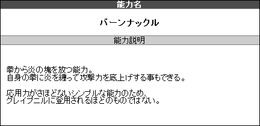

|
①どんな能力かを決定する
|
炎を出す、電気を操るなどの自身の能力を自由に設定・作成します。
能力タイプに沿った能力で作成して下さい。
どんな能力か最低限の説明は作成しましょう。
異能と同等の機能を持った武器・装備の作成は
「能力兵装」のケースに該当する場合のみ可。
|
▼補足：固有能力作成
●アンチ能力（異能を無効化する異能）は不可。
●異能そのものはあくまで１つのみ。
※一つの異能を様々な技に応用するというのが
当ＴＲＰＧの基本です。
●純粋な科学力のみに由来する異能の再現は
特殊武装が担当する。
|
▼【特殊ケース】 能力兵装について
異能者の発生から年月が経過したことで異能力の解析も進んでおり、
現在では異能と同等の機能を持った武器・装備を作成することが可能です。
これを「能力兵装」といいます。
ただし、能力兵装は「使用するために適合手術が必要」など、
一人で複数の異能を使ったり受け渡しができないよう設定を工夫してください。
ちなみに、「自我を持った剣のエクシードが発火能力を使う」
「セッション中に他のエクシードがその剣を装備し、自前の異能と併用して多重能力のように振舞う」
といったケースは剣自体が一個のエクシードとして独立しているのでＯＫです。
|
▼作成例
●能力名【 燃えさかる拳 －バーンナックル－ 】
●能力説明：拳から炎の塊を放つ

|
|
②どんな能力かを決定する
|
|
決定した能力でどんな事ができるかを考え、応用技を作成します。
応用技は以下の３つを組み合わせて作成します。
この内必須なのは発動系統で、他は任意となります。
能力応用技は最大８個まで作成できます。
※クリーチャーの応用技は最大５個まで。
|
▼補足：技の効果対象の考え方
応用技の対象は以下の３種に分けることができます。
- 自分
（例：自身を強化する）
- 味方
（例：味方を回復する）
- 敵
（例：敵を攻撃する）
- 自分＆他対象
（例：自身を強化しながら敵を攻撃する）
組み合わせパターンの詳細は
【 応用技の効果対象について 】を参照。
|
以下の手順で応用技を作成できます。
様々な組合せを自由な発想で、能力に当てこんで作成して下さい。
|
▼補足：フレーバー演出
●行為発動のみのフレーバー技は、
応用技は８つまでの制約外として作成可能です。
●ＳＰＥやＡＥ、カルマなどを特殊技として演出するのもＯＫです。
特殊武装の名称を変えたり、チェイン発動に名称をつけたりなど、
ご自由にカスタマイズして下さい。
|
▼
発動系統で【 付加発動 】を組み込んでいた場合は
【 付加効果 】を組合せます。
付加効果は一度に複数組み合わせる事もできます。
付加効果の一覧はこちら。
▼
必要であればＳＥ（サブエフェクト）を組み合わせます。
付加効果は一度に複数組み合わせる事もできます。
付加効果の一覧はこちら。
▼
▼
それぞれの【発動系統】【付加効果】【ＳＥ】には
必要スペックと消費ＰＰが設定されています。
組み合わせた合計から
その技の必要スペックと消費ＰＰが決定します。
スペックを超えた【 ＳＯ発動 】や
複数技を組み合わせる【 チェイン発動 】もあります。
▼例 ※サンプルキャラは覚醒型の発動スペック【３】
|